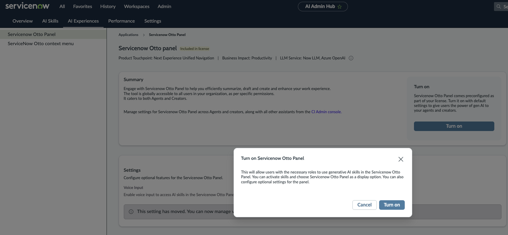
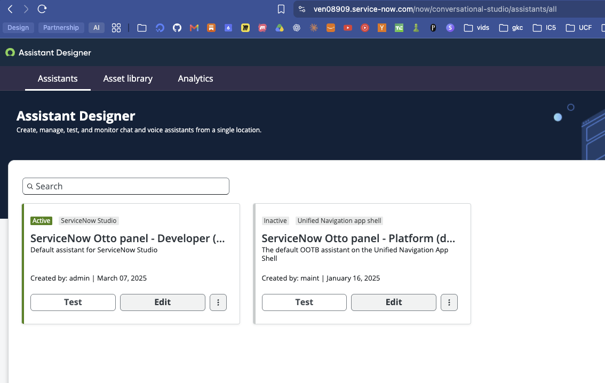
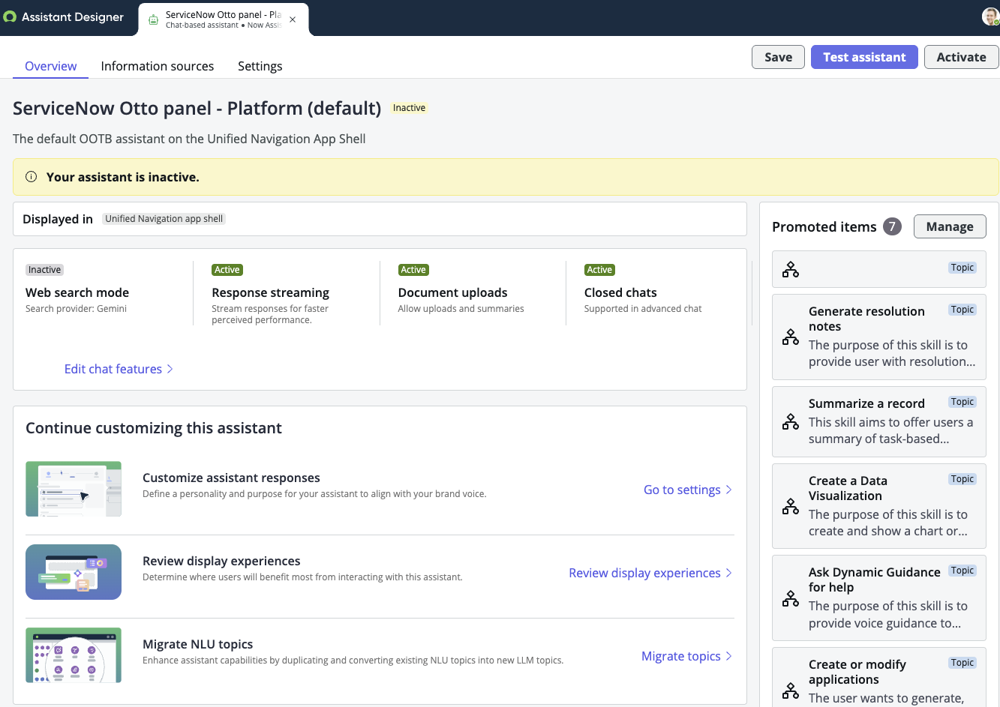
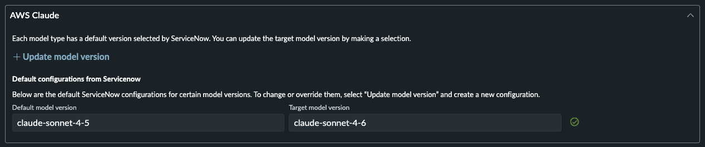
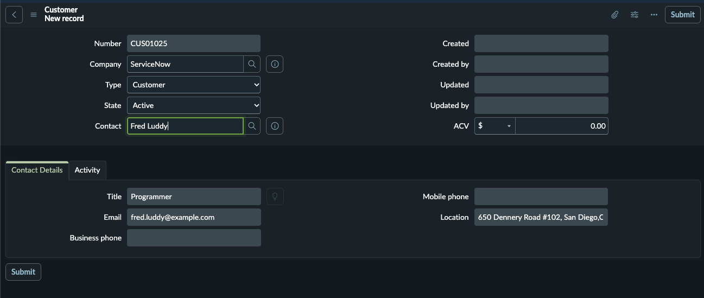
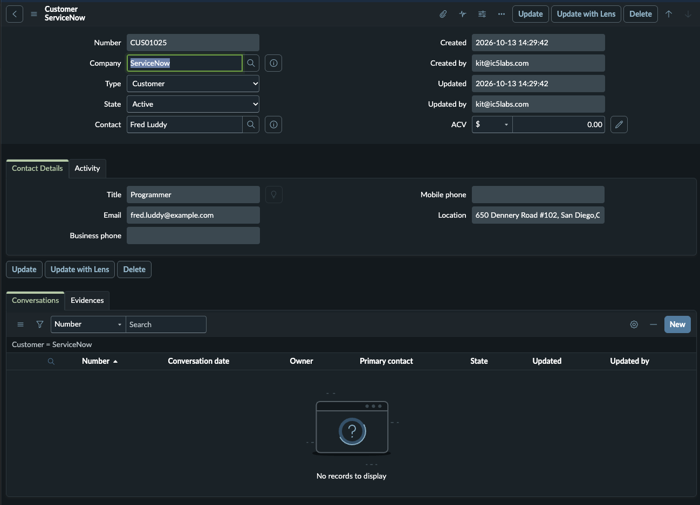
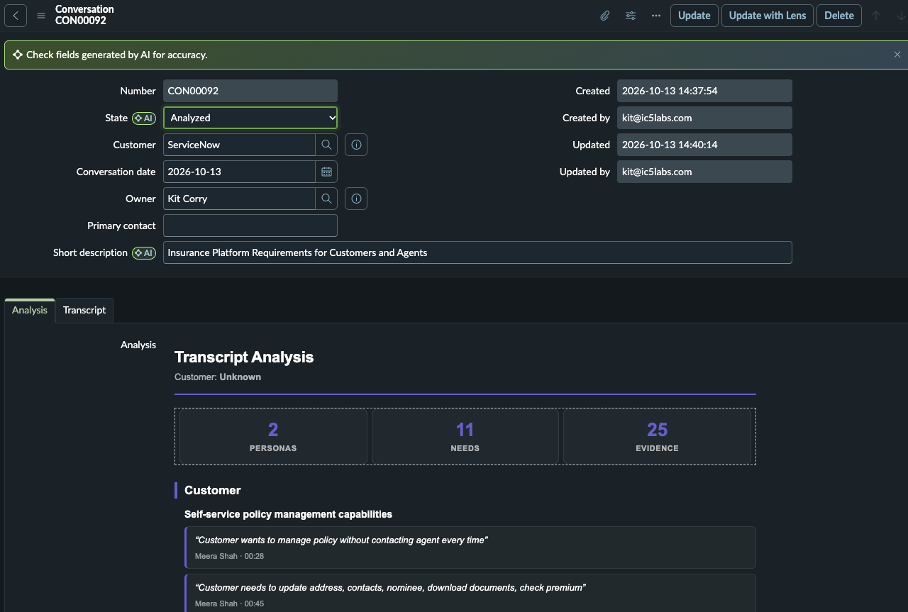
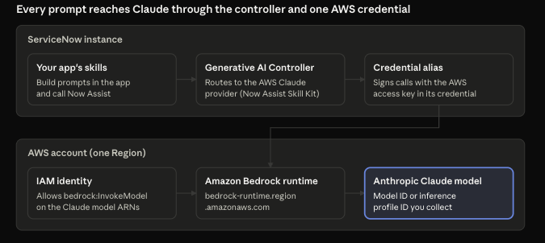

Installation and configuration
Install Customer Signals Agent from the ServiceNow Store, connect your approved model provider, apply guardrails, and confirm the agent can analyze a transcript.
Overview
Customer Signals Agent is distributed via the ServiceNow store. It can be installed with demo data on sub-production instances.
Application Dependencies
| Dependency | Min Version | App ID |
|---|---|---|
| ServiceNow Platform | [AP5+, ZP12+] | |
| ServiceNow Otto for Platform | [12.2.0+] | sn_genai_platform |
- As this is an AI agent, to use it you must have a license for a ServiceNow Otto product (e.g. Platform, ITSM, App Creator, etc.) and the ServiceNow Otto (Now Assist) Panel enabled.
- Users must have the following roles to analyze transcripts: now_assist_panel_user, x_ic5l_csa.user
Configuration Instructions
- Enable ServiceNow Otto (Now Assist) Panel
- Set Otto as the platform assistant
- Setup the LLM provider
- Setup guardrails via AI Guardian
- Anonymize fields containing Personally Identifiable Information (PII)
- Grant roles to users
- Test agent
Enable ServiceNow Otto (formerly Now Assist) Panel
- Navigate to Admin Center -> AI Admin Hub -> AI Experiences -> ServiceNow Otto Panel
- Ensure the Panel is turned on.
- Hit 'Turn on' then confirm.

- Hit 'Turn on' then confirm.
Activate ServiceNow Otto Panel - Platform
-
Conversational Interfaces -> Assistant Designer
-
Edit ServiceNow Otto panel - Platform

-
Edit, test, and activate the panel.
- Navigate to Assistant Designer -> Assistants and activate the ServiceNow Otto panel - Platform assistant

- Navigate to Assistant Designer -> Assistants and activate the ServiceNow Otto panel - Platform assistant
Setup the LLM and Provider
An approved large language model (LLM) provider should be configured and enabled by the instance administrator. The Solution is validated against the Now LLM Service and as well as the third-party providers ServiceNow supports for Now Assist, currently Azure OpenAI, AWS Claude, and Google Gemini. At least one must be approved and available; this application does not provide this or any credentials.
- Go to AI Admin Hub -> Settings -> Instance level configuration and ensure there is a configured LLM (example using AWS Claude shown below)

Setup guardrails via AI Guardian
- Navigate to Admin Center -> AI Admin Hub -> Settings -> AI Guardian to set the following settings:
- Prompt Injection: Applies instance-wide security against prompt manipulation. It can be configured to log attempts or block and log them.
- Offensiveness: Activates filtering for offensive content at the workflow level. If you want you can activate Offensiveness for Other. You can set detection impact to either Log only or Block and log.
- Sensitive Filters: Defines and restricts specific sensitive or out-of-policy subjects from being processed by generative AI models.
Anonymize fields containing Personally Identifiable Information (PII)
You should anonymize fields containing Personally Identifiable Information (PII) and other restricted information before sending to the model provider. To do that:
- Navigate to All > Data Privacy (Classic) > Privacy Advanced Configuration.
- Select New, enter a Name, set the Channel to 'Now Assist', and Save.
- From the saved policy you can add data patterns then activate the policy. Full instructions here: ServiceNow documentation: Configure Now Assist data privacy ↗
Grant roles to users
Users must have the following roles to analyze transcripts: now_assist_panel_user, x_ic5l_csa.user
Test application
- Create a customer
- Navigate to All > Customer Signals Agent > Customers
- Hit the New button
- Add details and save

- Add a new customer conversation
- In the Conversation related list, hit the new button

- In the Conversation related list, hit the new button
- Add primary contact and transcript* and save *Ask an LLM to generate a zoom-like meeting transcript on any topic you like
- Analyze the transcript
- On the conversation page, hit the Analyze button and open the ServiceNow Otto (Now Assist) Panel to watch the conversation. The Analysis should appear after the agent runs.
- Validate
- Ensure the Short description was filled out by the agent
- Ensure the Analysis is updated
- Ensure the state of the conversation is Analyzed
- Ensure evidences are created if identified

External systems connection
Before you install the app, collect the account details, credentials and identifiers for every external system it calls. The app sends its generative AI requests through Now Assist to Anthropic Claude models hosted on Amazon Bedrock, so you need information from two owners: your AWS administrator and your ServiceNow platform administrator.
External systems in scope
| System | Role in the app | Typical owner |
|---|---|---|
| Amazon Bedrock (AWS) | Hosts the Claude models that answer the app's prompts | Cloud / AWS administrator |
| AWS IAM | Issues the identity and keys ServiceNow uses to call Bedrock | Cloud security |
| ServiceNow Now Assist / Generative AI Controller | Routes the app's skills to the AWS Claude provider | ServiceNow platform administrator |
Integration overview
The app never calls AWS directly. Its skills hand prompts to Now Assist, the Generative AI Controller routes them to the AWS Claude provider, and the provider signs each call to Amazon Bedrock with the AWS credential stored behind a ServiceNow connection & credential alias.

Each box maps to items you collect below: the IAM identity and model IDs come from AWS, the controller, alias and credential from ServiceNow.
AWS information to collect
Your AWS administrator supplies these items. Use a dedicated AWS account or a dedicated IAM identity for ServiceNow so its usage and cost can be tracked and revoked on their own.
- AWS account ID — the 12-digit account that owns the Bedrock usage and billing.
- AWS Region — the Region where Claude is enabled in Bedrock (for example
us-east-1orus-west-2). Pick one that meets your data-residency rules; requests and data stay in this Region unless you use a cross-Region inference profile. - Claude model access — confirm in the Bedrock console (Model access) that the Anthropic Claude models the app uses are granted for the account and Region. First-time Anthropic access may require submitting a use-case form, which can take time to approve.
- Model ID or inference profile ID — copy the exact ID from the Bedrock console for each Claude model the app will call. Newer Claude models are often invoked through an inference profile ID (prefixed
us.,eu.orapac.) rather than the base model ID. - IAM identity for ServiceNow — an IAM user (or role, if your ServiceNow release supports role assumption) with a policy that allows at minimum
bedrock:InvokeModelandbedrock:InvokeModelWithResponseStream, scoped to the Claude model and inference-profile ARNs above. - Access key ID and secret access key — generated for that IAM identity. The secret is shown only once; send it through your secrets process, never by email or ticket comment.
- Optional: Bedrock guardrail ID and version — if your organization requires an Amazon Bedrock guardrail on every call.
- Optional: network controls — any AWS-side restriction (VPC endpoint policy, SCP, IP condition) that must allow traffic from your ServiceNow instance.
Example least-privilege policy (replace the Region, account and model identifiers):
{
"Version": "2012-10-17",
"Statement": [
{
"Sid": "InvokeClaudeForServiceNow",
"Effect": "Allow",
"Action": [
"bedrock:InvokeModel",
"bedrock:InvokeModelWithResponseStream"
],
"Resource": [
"arn:aws:bedrock:<region>::foundation-model/<claude-model-id>",
"arn:aws:bedrock:<region>:<account-id>:inference-profile/<inference-profile-id>"
]
}
]
}
Cross-Region inference profiles route to several Regions, so the foundation-model ARN may need to list each destination Region. Your AWS administrator should confirm against the profile's Region list.
ServiceNow information to collect
Your ServiceNow platform administrator supplies these items. Plugin names and menu paths vary by family release; confirm them against the ServiceNow documentation for your release.
- Instance URL and family release with patch — for example
https://<instance>.service-now.com, Yokohama Patch 6. Record the release so the right configuration steps are used. - Now Assist entitlement — confirm a Pro Plus or Enterprise Plus subscription that includes Now Assist and the Generative AI Controller.
- Installed plugins — confirm Generative AI Controller, Now Assist Skill Kit and the Amazon Bedrock spoke (or the AWS Claude provider integration on your release) are installed and current.
- Connection & Credential alias for AWS Claude — the alias the Generative AI Controller uses for the AWS Claude provider. Record its exact name and whether a credential record already exists; the app's skills resolve the provider through this alias.
- AWS credential record — the name of the ServiceNow credential record (AWS credentials type) that will hold the access key ID and secret from the AWS section. The administrator creates it during configuration; collect only the planned name now.
- Provider selection — confirm that AWS Claude is enabled as a provider in the Generative AI Controller and selectable in Now Assist Skill Kit, and whether it is or should become the default provider for the app's skills.
- Admin and runtime roles — the people who will hold
admin(or the Now Assist admin role) during setup, and the user groups who will run the app's skills. - Outbound network rules — any instance-side allow list, MID Server requirement or proxy that applies to calls to
bedrock-runtime.<region>.amazonaws.com. - Governance settings — whether Now Assist Guardian, data privacy masking or AI Control Tower policies are active, since they act on every prompt the app sends.
- Non-production instance — the sub-production instance where configuration is tested first, and whether it uses a separate AWS identity.
Testing the configuration
Create a new Conversation from Customer Signals Agent -> Conversations -> New add a transcript, and hit the Analyze button. Go to the Now Assist Panel to see the conversation and note that the identified evidence is listed in the Analysis field. If evidence shows up, the connection is successful.
Demo Data
No demo data is required for application installation, but can be included during installation to a sub-production instance.
Support and Troubleshooting
Service Level Agreement targets are for initial response, measured in support-portal business hours.
- Severity 1, production down or agent unable to process any transcript: four business hours to initial response, continuous effort thereafter, status update every business day.
- Severity 2, major function impaired with no reasonable workaround: one business day to initial response, status update every two business days.
- Severity 3, minor function impaired or a workaround exists: three business days to initial response.
- Severity 4, question, documentation issue, or enhancement request: five business days to initial response.
Resolution targets are not offered as fixed commitments because time to resolve depends on defect class and on the customer's instance and upgrade posture. Severity is assigned by IC5 Labs in consultation with the customer, and disagreement is resolved in the customer's favor at the first escalation.
Service Level Agreement Definition
Customers will be instructed to contact the integration provider (your organization) for technical support. If a customer first contacts ServiceNow Customer Support, then ServiceNow Customer Support will isolate the problem and instruct the customer to resolve the issue with your organization.
- Support Hours of Operation: 9am - 5pm EST
- Support Days of Operation: Monday - Friday excluding US Holidays
- Promised Call Response Time: Within 8 hours of received support request
- Promised Call Resolution Time: Within 1-2 business days of response
- Contact Method: email: support@ic5labs.com
- Contact Details: support@ic5labs.com, (689) 210-3900
Troubleshooting
The workflow is triggered but the agent never runs (no output on the Conversation record).
This is almost always a permissions issue. Confirm the agent's "Run as" user holds the now_assist_panel_user role, and that the cross-scope privilege allowing the application to call the sn_aia runtime is active. Also verify all agent tools are set to Autonomous — tools left in Supervised mode prevent the workflow from firing.
The analysis step returns empty, or the transcript "cannot be found."
The Transcript Analysis skill reads the transcript from the Conversation record using its conversationsysid input. Confirm the record has a non-empty transcript, that the input name in the skill's script exactly matches the input defined on the tool (case-sensitive), and that Now Assist is enabled and provisioned on the instance.
Evidence records are created but fields are blank, or the status/customer does not update.
This indicates a field-name or access mismatch. Verify the field names referenced in the Evidence & Analysis Builder script match the actual column names on the target instance, that the status choice values (new, Evidences created) exist in the choice list, and that Create/Update access is granted on the Conversation and Evidence tables.
Re-running analysis on the same record fails silently.
If an in-progress agent conversation already exists for a record, a second trigger will not fire. Ensure each run targets a record whose status permits triggering (the Analyze Transcript button is shown only when status is New), and that the prior run completed and sets its final status before re-triggering.